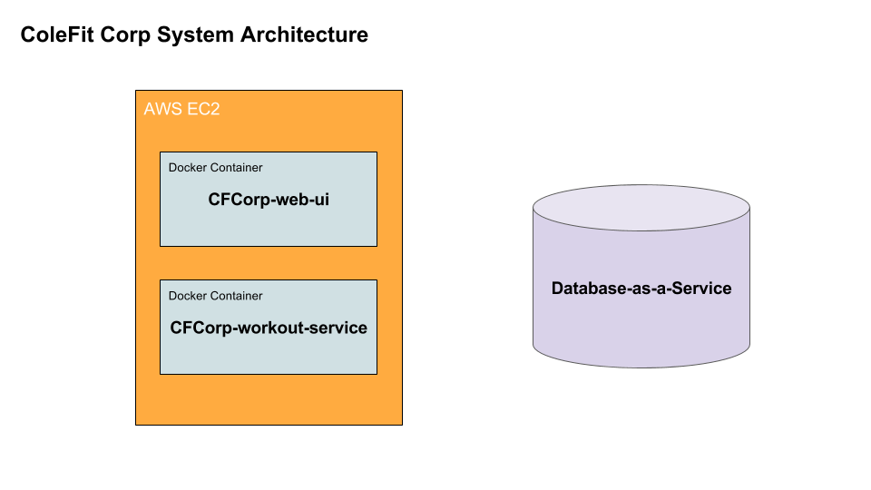

On a high level, the Cole Fit Corp web application runs on several
servers owned and operated by Amazon Web Services (AWS for short).
This website can be broken up into three logical components. They
are:
- The User Interface. This is the component you are looking
at right now. It supplies the static content of the site. Static
content can be thought of as content that doesn't change -- it
is the same for every user who visits the site and does not have
to be computed in the background.
- The Workout Service. This component operates
the colefitcorp.com/workouts page behind the scenes.
It is currently responsible for receiving submitted workouts and responding
to requests for these submitted workouts. However, this functionality
could be extended if I have the time and will to do so.
- The Database. This is where the submited workouts are
stored. As it is currently the sole source of truth for the list
of workouts, it is imperative that the database be highly available
and reliable.
I have created a series of diagrams that aim to explain the interplay
of the three ColeFit Corp web application components.

Above are the three main site components I am talking about.
You'll see that the ColeFitCorp Web UI and the ColeFitCorp Workout
Service live in something called Docker Containers. What is a docker
container?
A docker container is a tool that:
-
Isolates processes that are running on the same server. This
enables the cfcorp-web-ui and cfcorp-workout-service to just worry
about "themselves" as opposed to worrying about "themselves and
everything else on the server".
-
Standardizes the environment where each application is run.
Environment standardization allows me to have confidence that whatever
I built on my own computer will run as intended on any other computer.
When I build an application on my computer, I am building it using
my computer's operating environent. Now, when I have finished building
and am ready to ship my product to a server, I am basically sending
the code that I developed on my own computer (also called my "local")
to a computer somewhere in the cloud. Without a containerization
service such as Docker, there can be no promises made about how
my application will run on a different computer. What Docker does is
provide me with a "clean room" every time I want to run my application.
While this may seem like a small feature, it can save me a lot of
headaches. Especially when I have a product finished on my local
and am eager to see it run in production!